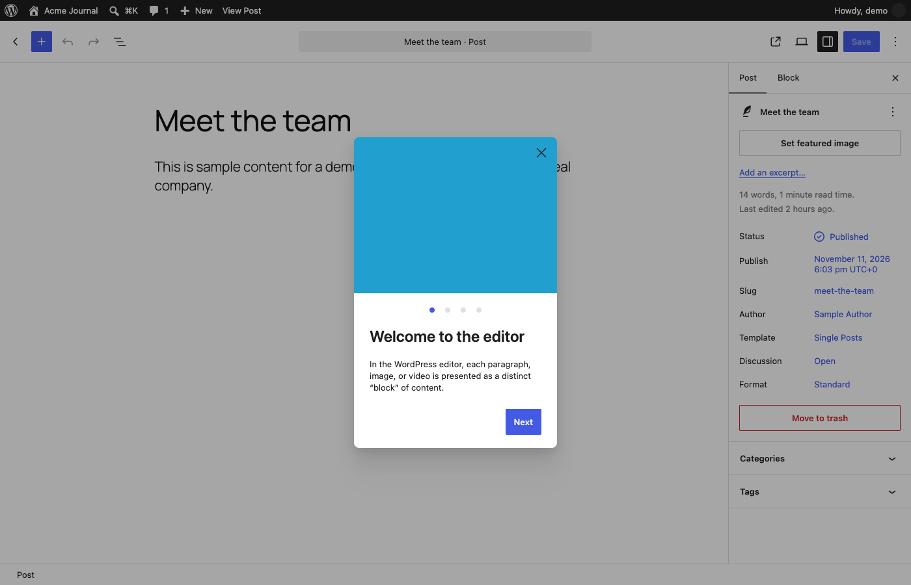

Screen spec · p035
Edit Post
The block editor opened for the published post "Meet the team": a content canvas on the left, a settings sidebar on the right, and on first visit a "Welcome to the editor" guide dialog over the top.

View 1 capture →Spec items
| ID | Type | Spec | Condition | Evidence | Confidence | Notes |
|---|---|---|---|---|---|---|
SPEC-p035-01 | Visibility | A "Welcome to the editor" dialog with four page dots, a "Next" button and a close (X) button covers the editor, which is dimmed behind it. | First time the editor is opened (assumed) | init | Verified | That it appears only once is inferred |
SPEC-p035-02 | Display | The canvas shows the post title "Meet the team" as a large heading with the body text below it. | Always | init | Verified | Partly hidden behind the dialog |
SPEC-p035-03 | Display | The settings sidebar has the tabs "Post" and "Block", with "Post" selected. | Always | init | Verified | |
SPEC-p035-04 | Display | The "Post" tab shows "Set featured image", "Add an excerpt…", the line "14 words, 1 minute read time." and "Last edited 2 hours ago." | Always | init | Verified | |
SPEC-p035-05 | Display | The "Post" tab lists "Status" (Published), "Publish" (November 11, 2026 6:03 pm UTC+0), "Slug" (meet-the-team), "Author", "Template" (Single Posts), "Discussion" (Open) and "Format" (Standard), each value shown as a link-style button. | Always | init | Verified | |
SPEC-p035-06 | Action | Pressing a value in the settings list (for example "Published" or the slug) probably opens a small popover for changing that setting. | Always | - | Inferred | Not pressed |
SPEC-p035-07 | Display | The "Save" button in the top bar looks dimmed, which suggests it is inactive until the post has unsaved changes. | No unsaved changes | init | Inferred | The whole editor is dimmed by the dialog, so the disabled state is not certain |
SPEC-p035-08 | Action | Pressing the red-outlined "Move to trash" button probably moves the post to the trash. | Always | - | Inferred | Not pressed; destructive |
SPEC-p035-09 | Display | "Categories" and "Tags" are shown as collapsed panels at the bottom of the sidebar. | Always | init | Verified | The panels were not expanded |
About this screen
Purpose
Where a post's title, body and publishing settings (status, date, slug, author, template, discussion, format, categories, tags) are edited and saved.
Shown when
Shown when a post is opened from the posts list (/wp-admin/post.php?post=11&action=edit). The "Welcome to the editor" dialog probably appears only the first time a user opens the editor.
Who uses it and how
Authors and editors change the text and settings of an existing post and press "Save"; the same layout is probably used for writing a new post.
Main features
- Block-based editing of the post title and body
- Top toolbar: block inserter, undo/redo, document overview, view, settings toggle, "Save", options menu
- Post settings: status, publish date, slug, author, template, discussion, format
- Featured image and excerpt
- Category and tag assignment panels
- "Move to trash"
- First-run guide "Welcome to the editor" (4 pages)
UI elements and behavior
| Element | Behavior | Notes |
|---|---|---|
| "Welcome to the editor" dialog | Explains blocks in four pages; "Next" advances and X closes. | Blocks the editor until closed; not pressed |
| Top toolbar (left) | Back arrow, blue "+" ("Block Inserter"), "Undo", "Redo" and "Document Overview" icons. | The back arrow probably returns to the posts list ("View Posts") |
| Document bar "Meet the team · Post" | Centre field showing the post title and type. | Probably opens the command palette when pressed |
| Top toolbar (right) | View-post icon, preview (device) icon, settings sidebar toggle, "Save" and the "Options" (⋮) menu. | Icons have no visible text labels |
| Settings sidebar, "Post" tab | Summary card for the post with "Actions" (⋮), featured image, excerpt and the settings list. | "Block" tab probably shows settings of the selected block |
| "Categories" / "Tags" panels | Collapsed accordions. | Probably show category checkboxes and a tag input when expanded |
| "Move to trash" button | Red-outlined button under the settings list. | Not pressed |
Input fields
| Field | Type | Required | Assumed validation | Notes |
|---|---|---|---|---|
| Post title | rich text (in canvas) | Probably no | Free text | Shown as the heading "Meet the team" |
| Post body | blocks (in canvas) | No | Paragraphs, images and other blocks | One paragraph block is visible |
| Status / Publish / Slug / Author / Template / Discussion / Format | popover controls opened from the sidebar | No | Each is probably chosen from fixed options or a date picker; the slug is probably restricted to URL-safe characters | Popovers were not opened |
| Excerpt | text (via "Add an excerpt…") | No | Free text | Not opened |
| Featured image | media picker (via "Set featured image") | No | An image from the media library | The media library is empty on this site |
Usage flow
- Open a post from the posts list.
- Close the "Welcome to the editor" dialog (or step through it with "Next").
- Edit the title and body in the canvas.
- Adjust settings in the "Post" tab: status, publish date, slug, author, categories, tags and so on.
- Press "Save" to store the changes.
- Use the back arrow to return to the posts list.
Navigation
| Trigger | Goes to | Notes |
|---|---|---|
| Back arrow at the top left ("View Posts") | p003 Posts | |
| "View Post" in the admin toolbar / view-post icon | Public post page (outside the admin) | Probably opens the published post |
| "Move to trash" button | p003 Posts | Inferred; not pressed |
| "Set featured image" button | Media selection dialog (not captured) | Inferred |
Variants and business rules
States and variants
Captured with the first-run guide open and no unsaved changes, for a post whose status is Published. The side menu is hidden in this editor (full-screen layout); only the top admin toolbar remains. Draft or pending posts probably show "Publish" or "Save draft" instead of "Save". The "Block" tab, the expanded "Categories"/"Tags" panels and every popover were not captured.
Business rules and constraints
A post has a status, a publish date, a URL slug, one author, a template, a discussion setting (comments open or closed) and a format, plus categories and tags. The post shown is published and uses the "Single Posts" template.
Open questions
- Whether the welcome guide reappears for each user or each browser.
- Whether "Move to trash" asks for confirmation.
- Which options the "Options" (⋮) and "Actions" (⋮) menus contain.
- Whether authors can change the "Author" field or only editors and administrators can.
Auto-extracted data (headings, links, buttons, tables, click decisions)
Headings
- H1: Edit Post
- H1: Meet the team · Post
- H2: Meet the team
- H2: Categories
- H2: Tags
- H1: Welcome to the editor
Tables
-
Internal links
| Text | URL | Notes |
|---|---|---|
| Skip to main content | http://localhost:8899/wp-admin/post.php?post=11&action=edit#wpbody-content | |
| Skip to toolbar | http://localhost:8899/wp-admin/post.php?post=11&action=edit#wp-toolbar | |
| Dashboard | http://localhost:8899/wp-admin/index.php | |
| Home | http://localhost:8899/wp-admin/index.php | |
| Updates 0 | http://localhost:8899/wp-admin/update-core.php | |
| Posts | http://localhost:8899/wp-admin/edit.php | |
| All Posts | http://localhost:8899/wp-admin/edit.php | |
| Add Post | http://localhost:8899/wp-admin/post-new.php | Excluded pattern: post-new\.php |
| Categories | http://localhost:8899/wp-admin/edit-tags.php?taxonomy=category | |
| Tags | http://localhost:8899/wp-admin/edit-tags.php?taxonomy=post_tag | |
| Media | http://localhost:8899/wp-admin/upload.php | |
| Library | http://localhost:8899/wp-admin/upload.php | |
| Add Media File | http://localhost:8899/wp-admin/media-new.php | |
| Pages | http://localhost:8899/wp-admin/edit.php?post_type=page | |
| All Pages | http://localhost:8899/wp-admin/edit.php?post_type=page | |
| Add Page | http://localhost:8899/wp-admin/post-new.php?post_type=page | Excluded pattern: post-new\.php |
| Comments 11 Comment in moderation | http://localhost:8899/wp-admin/edit-comments.php | |
| Appearance | http://localhost:8899/wp-admin/themes.php | |
| Themes 0 | http://localhost:8899/wp-admin/themes.php | |
| Editor | http://localhost:8899/wp-admin/site-editor.php | |
| Fonts | http://localhost:8899/wp-admin/font-library.php | |
| Plugins 0 | http://localhost:8899/wp-admin/plugins.php | |
| Installed Plugins | http://localhost:8899/wp-admin/plugins.php | |
| Add Plugin | http://localhost:8899/wp-admin/plugin-install.php | |
| Users | http://localhost:8899/wp-admin/users.php | |
| All Users | http://localhost:8899/wp-admin/users.php | |
| Add User | http://localhost:8899/wp-admin/user-new.php | |
| Profile | http://localhost:8899/wp-admin/profile.php | |
| Tools | http://localhost:8899/wp-admin/tools.php | |
| Available Tools | http://localhost:8899/wp-admin/tools.php | |
| Import | http://localhost:8899/wp-admin/import.php | |
| Export | http://localhost:8899/wp-admin/export.php | |
| Site Health 2 | http://localhost:8899/wp-admin/site-health.php | |
| Export Personal Data | http://localhost:8899/wp-admin/export-personal-data.php | Risky URL keyword: export |
| Erase Personal Data | http://localhost:8899/wp-admin/erase-personal-data.php | |
| Theme File Editor | http://localhost:8899/wp-admin/theme-editor.php | |
| Plugin File Editor | http://localhost:8899/wp-admin/plugin-editor.php | |
| Settings | http://localhost:8899/wp-admin/options-general.php | |
| General | http://localhost:8899/wp-admin/options-general.php | |
| Connectors | http://localhost:8899/wp-admin/options-connectors.php | |
| Writing | http://localhost:8899/wp-admin/options-writing.php | |
| Reading | http://localhost:8899/wp-admin/options-reading.php | |
| Discussion | http://localhost:8899/wp-admin/options-discussion.php | |
| Media | http://localhost:8899/wp-admin/options-media.php | |
| Permalinks | http://localhost:8899/wp-admin/options-permalink.php | |
| Privacy | http://localhost:8899/wp-admin/options-privacy.php | |
| Menu | http://localhost:8899/wp-admin/post.php?post=11&action=edit# | |
| About WordPress | http://localhost:8899/wp-admin/about.php | |
| About WordPress | http://localhost:8899/wp-admin/about.php | |
| Get Involved | http://localhost:8899/wp-admin/contribute.php | |
| ⌘K Open command palette | http://localhost:8899/wp-admin/post.php?post=11&action=edit# | |
| 1 1 Comment in moderation | http://localhost:8899/wp-admin/edit-comments.php | |
| New | http://localhost:8899/wp-admin/post-new.php | Excluded pattern: post-new\.php |
| Post | http://localhost:8899/wp-admin/post-new.php | Excluded pattern: post-new\.php |
| Media | http://localhost:8899/wp-admin/media-new.php | |
| Page | http://localhost:8899/wp-admin/post-new.php?post_type=page | Excluded pattern: post-new\.php |
| User | http://localhost:8899/wp-admin/user-new.php | |
| Howdy, demo | http://localhost:8899/wp-admin/profile.php | |
| demoEdit Profile | http://localhost:8899/wp-admin/profile.php | |
| View Posts | http://localhost:8899/wp-admin/edit.php?post_type=post | |
| Classic Editor plugin | http://localhost:8899/wp-admin/update.php?action=install-plugin&plugin=classic-editor&_wpnonce=6dfcfa1b72 | State-changing token in URL: _wpnonce |
External links
| Text | URL |
|---|---|
| WordPress.org | https://wordpress.org/ |
| Documentation | https://wordpress.org/documentation/ |
| Learn WordPress | https://learn.wordpress.org/ |
| Support | https://wordpress.org/support/forums/ |
| Feedback | https://wordpress.org/support/forum/requests-and-feedback |
| Acme Journal | http://localhost:8899/ |
| Visit Site | http://localhost:8899/ |
| View Post | http://localhost:8899/meet-the-team/ |
| Log Out | http://localhost:8899/wp-login.php?action=logout&_wpnonce=3c75f1926c |
| View Post | http://localhost:8899/meet-the-team/ |
| Preview(opens in a new tab) | http://localhost:8899/meet-the-team/?preview=true |
| WordPress | https://wordpress.org/ |
| Please log in again. | http://localhost:8899/wp-login.php |
Safety decision for clickable elements
| Element | Type | Decision | Reason | Selector |
|---|---|---|---|---|
| ⌘K Open command palette | menuitem | Skip | Not clicked (pages are opened by URL) | |
| Block Inserter | button | Skip | Blocked keyword: lock | |
| Undo | button | Skip | Not clicked (pages are opened by URL) | |
| Redo | button | Skip | Not clicked (pages are opened by URL) | |
| Document Overview | button | Skip | Not clicked (pages are opened by URL) | |
| Meet the team · Post | button | Skip | Blocked keyword: post | |
| View | button | Skip | Not clicked (pages are opened by URL) | |
| Settings | button | Skip | Not clicked (pages are opened by URL) | |
| Save | button | Skip | Blocked keyword: save | |
| Options | button | Skip | Not clicked (pages are opened by URL) | |
| Post | tab | Skip | Blocked keyword: post | |
| Block | tab | Skip | Blocked keyword: lock | |
| Close Settings | button | Skip | Not clicked (pages are opened by URL) | |
| Actions | button | Skip | Not clicked (pages are opened by URL) | |
| Set featured image | button | Skip | Not clicked (pages are opened by URL) | |
| Add an excerpt… | button | Skip | Not clicked (pages are opened by URL) | |
| Published | button | Skip | Blocked keyword: publish | |
| November 11, 2026 6:03 pm UTC+0 | button | Skip | Not clicked (pages are opened by URL) | |
| meet-the-team | button | Skip | Not clicked (pages are opened by URL) | |
| Sample Author | button | Skip | Not clicked (pages are opened by URL) | |
| Single Posts | button | Skip | Blocked keyword: post | |
| Open | button | Skip | Not clicked (pages are opened by URL) | |
| Standard | button | Skip | Not clicked (pages are opened by URL) | |
| Move to trash | button | Skip | Blocked keyword: move | |
| Categories | button | Skip | Not clicked (pages are opened by URL) | |
| Tags | button | Skip | Not clicked (pages are opened by URL) | |
| Open save panel | button | Skip | Blocked keyword: save | |
| Close | button | Skip | Not clicked (pages are opened by URL) | |
| Page 1 of 4 | button | Skip | Not clicked (pages are opened by URL) | |
| Page 2 of 4 | button | Skip | Not clicked (pages are opened by URL) | |
| Page 3 of 4 | button | Skip | Not clicked (pages are opened by URL) | |
| Page 4 of 4 | button | Skip | Not clicked (pages are opened by URL) | |
| Next | button | Skip | Not clicked (pages are opened by URL) |
Body text (start)
About WordPress Acme Journal ⌘K Open command palette 1 1 Comment in moderation New View Post Howdy, demo Edit Post Meet the team · Post Save Post Block Meet the team Set featured image Add an excerpt… 14 words, 1 minute read time. Last edited 2 hours ago. Status Published Publish November 11, 2026 6:03 pm UTC+0 Slug meet-the-team Author Sample Author Template Single Posts Discussion Open Format Standard Move to trash Categories Tags Open save panel Post Welcome to the editor In the WordPress editor, each paragraph, image, or video is presented as a distinct “block” of content. Next